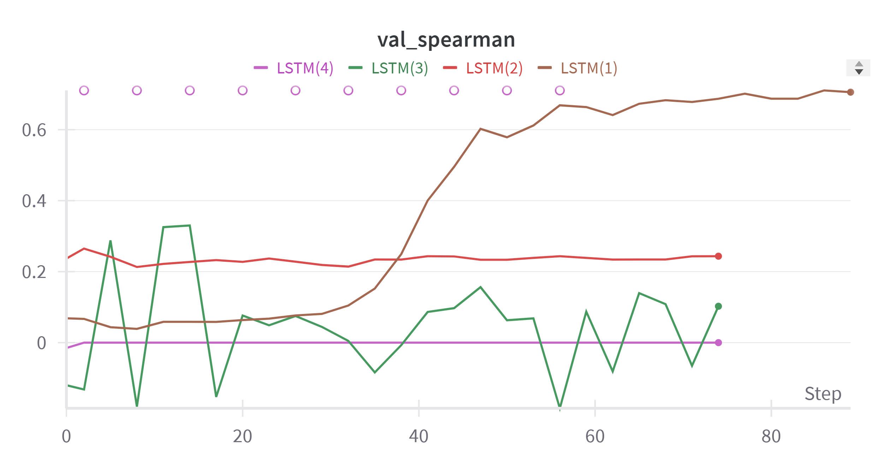

Stock Price Prediction
Technologies
- Pytorch
- PyTorch Lightning
- Recurrent Neural Networks (RNN)
- Long Short-Term Memory (LSTM)
- Pandas
- Mathematical Plotting Library (matplotlib)
- Scikit-Learn
- Weights and Biases
Background
I always hear so much talk about stocks. How they can be someone's road to fortune, how people study them to be able to understand them enough to be able to profit from buying and selling them at the right times, but most of all, I heard how unpredictable they are.
Now, I am a numbers guy, and I find that there is always a pattern in numbers. Since I didn’t know much about them, I had my doubts about how unpredictable they were. In my head I always thought: “Sure the market is hard to predict, but how complex are its patterns”?
Although I was genuinely curious about how they work, I always felt like I didn't know enough about them to suggest otherwise. And since my curiosity was always pulled more towards science and technology I never pursued a deeper understanding of them. Instead, I learned about predictive models. And since algorithms is something I know and love, I decided to satiate my curiosity using that knowledge.
Goal
The goal of this project was to prove to myself that predicting the value of a stock is as hard as they say, while secretly hoping they were wrong. My idea was to grab a stock’s historical price charts and create a Machine Learning (ML) model to predict the next day’s value.
Graphs:
The val_spearman refers to the Spearman's rank correlation coefficient. This is a metric used to evaluate the strength of the relationship between two variables. The different lines show different trainings I ran (LSTM (4)) being the last one. The only line in the graph worth paying attention to is LSTM (4), I still displayed the others to show how I had to fix my code step by step until I knew I had it right.
Conclusions:
As expected, the model was unable to find a strong enough correlation between the airbnb historical data and the stock's opening value for the next day. This is represented by LSTM(4)'s value being at a constant 0 through all of the time steps in the model. A value of zero, represent no correlation between the data we are using to predict the stock's value and the actual stock value.
What I Learned:
The historical price charts of a stock do not contain enough relevant data to predict the stock value.
Solutions/Next Steps:
While keeping the structure of this model, there is little I can do to achieve accurate predictions. But one option could be trying to train the model with a stock that is not as volatile as ABNB. Moreover, I could look into applying it to bonds. On the other hand, I could change the model to be trained with media feed from relevant X accounts and news. For this, I could try a Text Sentiment Analysis Model to determine weather the tweet is impaling that the stock will go up or down and then pass that that through a Long Shor-Term Memory (LSTM) or a Temporal Convolutional Network (TCN). Another model that could be fruitful is using a transformer to extract embeddings from the textual data from such media and then run that data through an LSTM or Dense Neural Network (DNN).
Links:
Github link: https://github.com/Lorant7/airbnb_stock_prediction